Agent: Perceives environment by sensors, acts by actuators
Percept: Agent’s perceptual inputs at any given instant
Percept Sequence: Complete history of everything agnet has perceived
Rational Agent: Agents that acts to maximize its expected performance measure
Deterministic Environment: Next state of environment is fixed by current state and action
Dynamic Environment: Environment can change while agent is deliberating
Performance Measure: Evaluates any given sequence of environment states for utility
Agent Function:Maps any given percept sequence to an action
Abstraction: Process of removing detail from a representation
Fully Observable: Sensors give complete state of environment at each time point
State Space: All states reachable from the intial state by a sequence of actions
Frontier: Set of all leaf nodes available for expansion at any given time
Uninformed Search: Uses no additional information beyond problem definition
Informed Search: Uses problem-specific knowledge beyond problem definition
Optimal Search: Guaranteed to find lowest cost among all solution
Complete Search: Guaranteed to find a solution if one is accessible
Expand a state: Apply each legal action to state, generating a new set of states
Branching Factor: Maximum number of successors of any node
Heuristic Function: Estimates cost of cheapest path from current state to goal state
A* Search: Tries to minimize the total estimated solution cost
Greedy Best-first Search: Tries to expand the node believed to be closest to the goal
Consistent Heuristic: For n’s a successor of n from action a, h(n) <= cost(n,a,n’) + h(n’)
Admissible Heuristic: Never over-estimates cost of cheapest path to a goal state
A heuristic h(n) is admissible if for every node n,
h*(n): the true cost to reach the goal state from n
A heuristic is consistent (or monotone) if for every node n, every
successor n’ of n generated by any action a,
Game Tree: Tree where nodes are game states and edges are game moves
Cut-off Test: Function that decides when to stop exploring this search branch
Alpha-Beta Pruning: Returns same move as MiniMax, but may prune more branches
Weighted Linear Function: Vector dot product of a weight vector and a state feature vector
Zero-sum Game: In all game instances, total pay-off summed over all player is the same
MiniMax Algorithm: Optimal strategy for 2-player zero-sum games of perfect information, but impractical given limited time to make each move
Game Strategy: Function that specifies a player’s move in every possible game state
Heuristic Evaluation Function: Approximates the value of a game state(i.e., of a game position)
Solution to a CSP: A complete and consistent assignment
Complete Assignment: Every variable is associated with a value
Constraint Graph: Nodes correspond to variables, links connect variables that participate in a constraint
Arc Consistency: All values in a variable’s domain satisfy its binary constraints
Forward Checking: When variable X is assigned, delete any value of other variable that is inconsistent with the assigned value of X
Assignment: Associates values with some or all variables
Node Consistency: All values in a variable’s domain satisfy its unary constraints
Domain: Set of allowed values for some variable
Constraint: Specifies an allowable combination of variable values
Consistent Assignment: The values assigned to variables do not violate any constraints
Logic: Formal symbol system for representation and inference
KB: knowledge base - a set of sentences or facts
model: Possible world that assigns TRUE or FALSE to each proposition.
Valid: True in every possible world
Semantics: Defines the truth of each sentence in each possible world
Satisfiable” True in at least one possible world
unsatisfiable: A sentence is unsatisfiable if it is false in all model.
Syntax: Specifies all the sentences that are well formed
Entailment: The idea that a sentence follows logically from other sentences
inference: deriving sentences from other sentences
Sound: inference system derives only entailed sentences
Complete: Inference system can derive any sentence that is entailed
Proof: Chain of inference rule conclusions leading to a desired sentence.
Conjunctive Normal Form: A sentence expressed as a conjuction of clauses (disjuncts)
Probability Theory: Assigns each sentence a degree of belief raning from 0 to 1
Conditional independence: P(a^b|c) = P(a|c)P(b|c)
Independence: P(a^b)=P(a)P(b)
Product rule(chain rule): P(abc) = P(a|b^c)P(b|c)P(c)
Conditional probability: Degree of belief accorded after some evidence is obtained
Unconditional probability: Degree of belief accorded without any other information
Factored representation: A possible world is represented by variable/value pairs
Random variable: Takes values from its domain with specified probabilities
Bayes’ rule: P(a|b) = P(b|a)P(a)/P(b)
Joint probability distribution: Gives probability of all combinations of values of all variables
Learning: improves performance of future tasks after observing the world
Decision Boundary: Surface in a high-dimensional space that separates the classes
Factored Representation: Fixed set, list, or vector of features/attributes paried with a value
Overfitting: Choose an over-complex model based on irrelevant data patterns
Cross-validation: Randomly split the data into a training set and a test set
Unsupervised Learning: Agent learns patterns in the input with no explicit feedback
Supervised Learning: Agent observes input-output pairs & learns to map input to output
Test Set: Examples distinct from training set, used to estimate accuracy
Training set: Example input-output pairs, from which to discover a hypothesis
Classification: Supervised learning with a discrete set of possible output values
Regression: Supervised learning with numeric output values
| search alg | chracteristics | Complete? | Time complexity | Space complexity | Optimal? |
|---|---|---|---|---|---|
| Depth-First | Frontier = Last In First Out (LIFO) queue; Goal-Test when inserted. | No: fails in loops/infinite-depth spaces | No: It may find a non-optimal goal first | ||
| Breadth-First | FIFO, goal test after node is popped off | yes, it always reaches a goal | Yes. It is only optimal if path cost is a non-decreasing function of depth, i.e. |
||
| Uniform-Cost | goal test after node is popped off. FIFO, Frontier = queue ordered by path cost. Equivalent to breadth-first if all step costs all equal. | Yes, it b is finite and step cost |
Yes, for any step cost |
||
| Depth-Limited | Goal test when inserted. Only search until depth L | No | O(bl) | No | |
| iterative deepening | Goal test when inserted. Increase depth iteratively. - Inherits the memory advantage of DFS; - Has the completeness property of BFS | Yes | Yes, if cost is a non-decreasing function only of depth. | ||
| bidirectional (if applicable) | simultaneously search forward from S and backwards from G \n – stop when both “meet in the middle” \n – need to keep track of the intersection of 2 open sets of nodes | Yes | Yes | ||
| greedy best-first search | Same for differnt goal test strategy. |
no(tree) | no | ||
| A*search | goal test after node is popped off. |
yes | Yes. With: Tree-Search, admissible heuristic; Graph-Search,consistent heuristic |
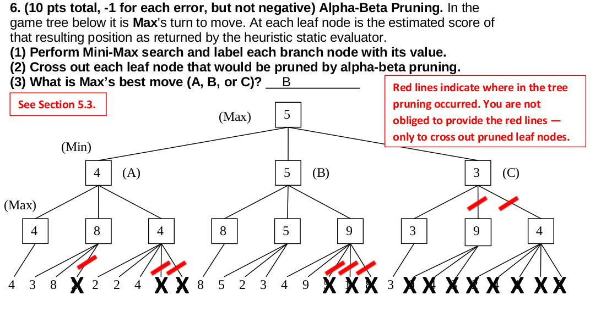
alpha: maximizer. Only use alpha to note the level of Max.
beta: minimizer. use beta to note the level of Min.
Update alpha or beta of a node after finishing search it’s children
Every time look at a child, compare alpha and beta. When alpha > beta, prune!
example from 2012 fq
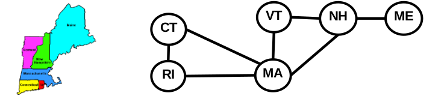
After a value of a variable is assigned, delete the violated values of its neighbors
(Check only neighbors; delete any inconsistent values)
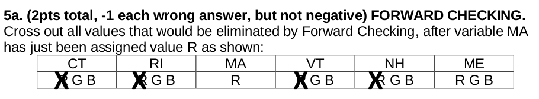
In this graph, MA neighbors are VT, NH, CT, RI. It will check those neighbors and only cross out their inconsistent values.
Like Forward Checking, but exhausive until quiescence.
An Arc X→ Y is consistent if for every value x of X there is some value y of Y consistent with x.
Arc consistency detects failure earlier than FC
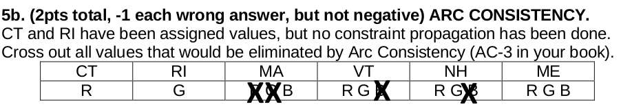
In this example, CT and RI are assigned values. Steps are:
A.k.a. most constrained variable heuristic
Heuristic Rule: choose variable with the fewest legal moves
will immediately detect failure if X has no legal values
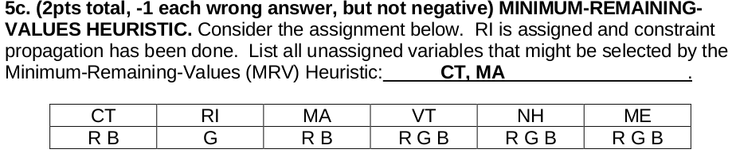
In this example, becasue CT and MA both have fewest available values (2), they will be selected.
Heuristic Rule: select variable that is involved in the largest number of constraints on other unassigned variables.
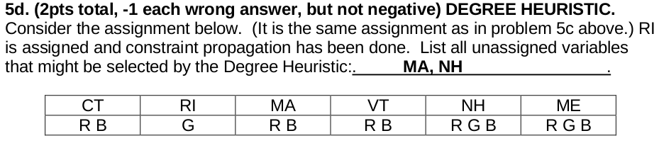
in this example, after RI is assigned, RI is removed from the constraints of MA. The number of constraints on other unassigned variables for both MA and NH is 3. So we should choose MA, NH.
Select new value that results in a minimum number of conflicts with the other variables
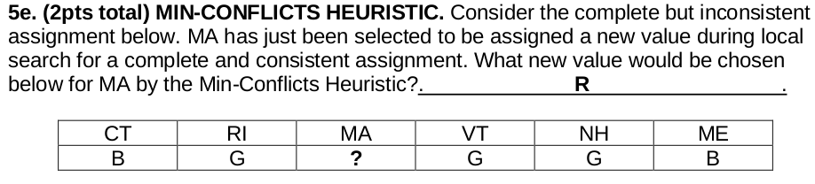
In this example, we count the number of conflicts of each value
R: 0
G: 3 (RI,VT,NH)
B: 1 (CT)
so we should choose R
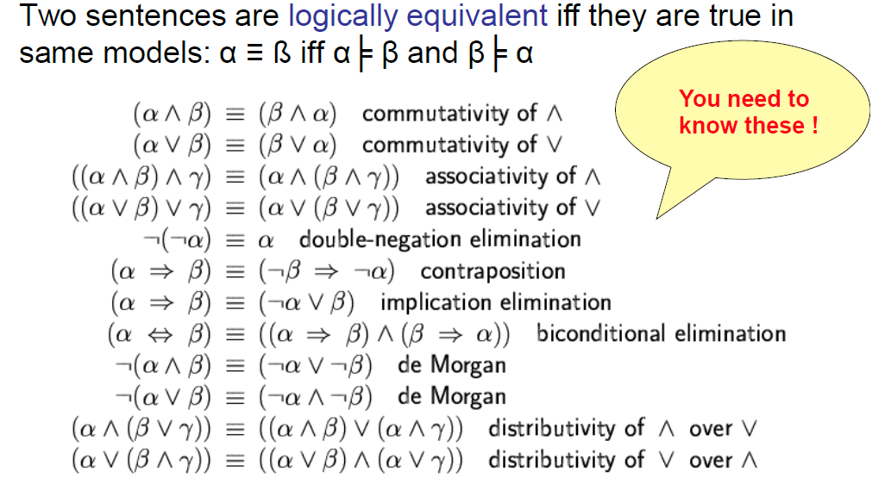
Example from 2012 fq
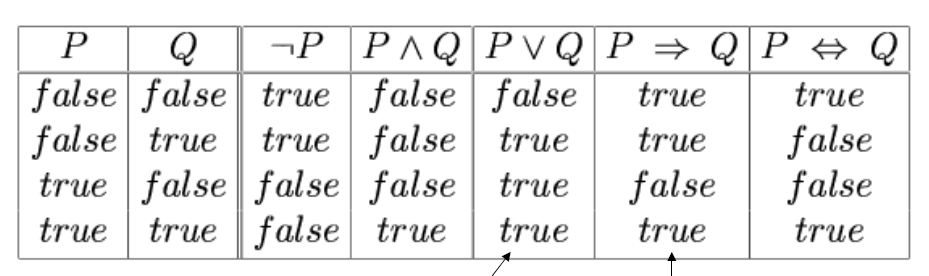
key words:
Using Product Rule
start from Product Rule:
Isolate Equality on Right Side:
Divide through by P(b)
(Product) chain rule:
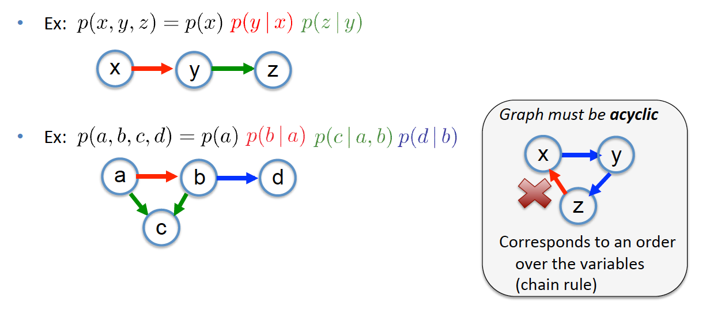
IG (Information gain):
example from 2013 fq
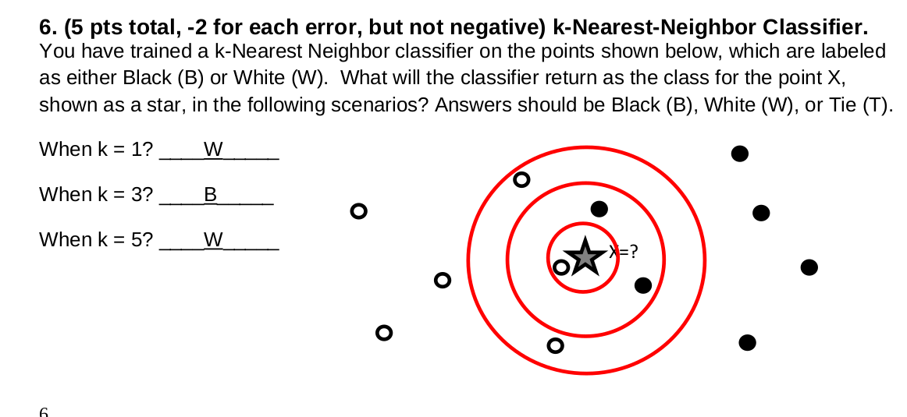
we count the number of points from the circle.
when k = 1, we count the one near the star, it is W, so W
when k = 3, we count the 3 nearest points from the star, 1 W and 2B, so B
when k = 5, we count 5 nearest points from the star, 3 W and 2 B, so W